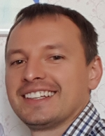

Nikolai Khmelnitski
Junior Frontend Developer
Contacts
Site: Lithuania, Vilnius
Tel.: +370 676 156 29
Github: NikooneX
Email: niko.xme@gmail.com
Summary
I have worked as an engineer for the last 17 years. During this time, I went from an ordinary mechanical engineer to a co-founder of my own company. Thanks to the craving for knowledge, I thoroughly understood how complex gas and diesel generator sets work. I learned how to repair them, diagnostics them, and later performed installation supervision and commissioning of new equipment Caterpillar
For the last 4 years I have been working in my own company. We manufactured, installed and commissioned control systems for gas and diesel generator sets. As I worked, I increasingly wanted to learn how computer programs are created and run the "iron"
I am currently studying IT. While studying Python, I liked to solve varying complexity problems with the help of logic and knowledge of syntax. Now studying the front-end, I like to see the result of my work
I know that my ability to learn and technical mind will help me become a professional developer
Code
The input to the program is a natural number N, and then N different natural numbers, each on a separate line. Write a program that prints the largest and second largest number in a sequence
n = int(input())
large = -1
prelarge = -2
for i in range(n):
num = int(input())
if num > large:
prelarge = large
large = num
elif num < large and num > prelarge:
prelarge = num
print(large)
print(prelarge)
Work
Co-founder LLC Energofix
Activities (Dec/2018 - Till now / Minsk, Belarus)
- Manufacturing, upgrade, installation, commissioning of control cabinets for diesel and gas generator sets (CAT, MWM, Perkins...)
- Repair, maintenance, commissioning, diagnostics gen sets
- Manufacture, installation and commissioning of the control cabinets for 2 diesel gen sets CAT C18 (island mode), CAT 3516B (island mode TIER III). Performs the functions of load sharing, protection, SCADA
- Retrofit the control system of 3 CAT G3520C gas gen sets and 2 MWM CG132V12 with the replacement of controllers
Leading mechanical engineer, head of gas engines service department LLC Zeppelin Belarus
Activities (Mar/2012 – Dec/2018 / Minsk, Belarus)
- Organization of work of mechanical engineers. Work with clients. Work with the CAT support service. Participation in technical seminars for dealers. Investigation of difficult cases of breakdowns/diagnostics of gen sets. Conducting trainings for clients. Installation, supervision, commissioning, repair, maintenance, diagnostics of diesel and gas gen sets (Caterpillar G3500 C&E, 3500; MWM CG170/132; Perkins) with various control systems (TemEvo, Terberg, ComAp, Woodward, EMCP, Datakom, Deif...)
Mechanical engineer LLC New Technologies
Activities (Jan-2011 - Mar-2012 / Minsk, Belarus)
- Repair, maintenance, diagnostics Horizontal Directional Drilling the Vermeer and equipment. Purchase spare parts
Equipment repair master Republican Unitary Enterprise Minsk Tractor Works
Activities (Apr-2005 - Jan-2011 / Minsk, Belarus)
- Organization of the work of locksmiths repairmen of the heat treatment shop
Courses
RS School (2022, in progress)
- Курс «JavaScript/Front-end»
School BEEGEEK (2022)
- Вебразработка для начинающих HTML/CSS
EPAM Learn Digital Platform (2022)
- IT Fundamentals
School BEEGEEK (2022)
- "Поколение Python": курс для начинающих
ComAp training center, Czech Republic (2019)
- Advanced Plus (engines control system)
Marelli Generator training center, Italy (2017)
- Marelli Generator Functions, Analog and Digital AVR Setting and Troubleshooting
Terberg training center, the Netherlands (2017)
- Industrial Control System for Gas engines
ZEPPELIN Rusland (2015)
- Expert category C (Caterpillar)
Caterpillar Energy Solutions, Germany (2014)
- Total Electronic Management – TEM EVO and Gas Engines – Basics and Periphery Components
Caterpillar, Moscow (2013)
- Warranty Training
Caterpillar Malaga Demonstration and Learning Center (2013)
- G3500 C&E Electronic Engine / MDLC G3500 Lean Burn Engines
Skills
- HTML
- CSS
- Python
- Markdown
- VS Code
- Github
- JS
Competencies
- Goal oriented
- Problem-solving
- Results-driven
- Troubleshooting
- Teamwork
- Leadership
- Avid learner
Education
Belarusian National Technical University (Belarus, Minsk), Automotive Faculty (2003 – 2009), Engineer-Mechanical
Zhodino professional lyceum (Belarus 2000-2003)
Languages
Native Russian
English A2→B1